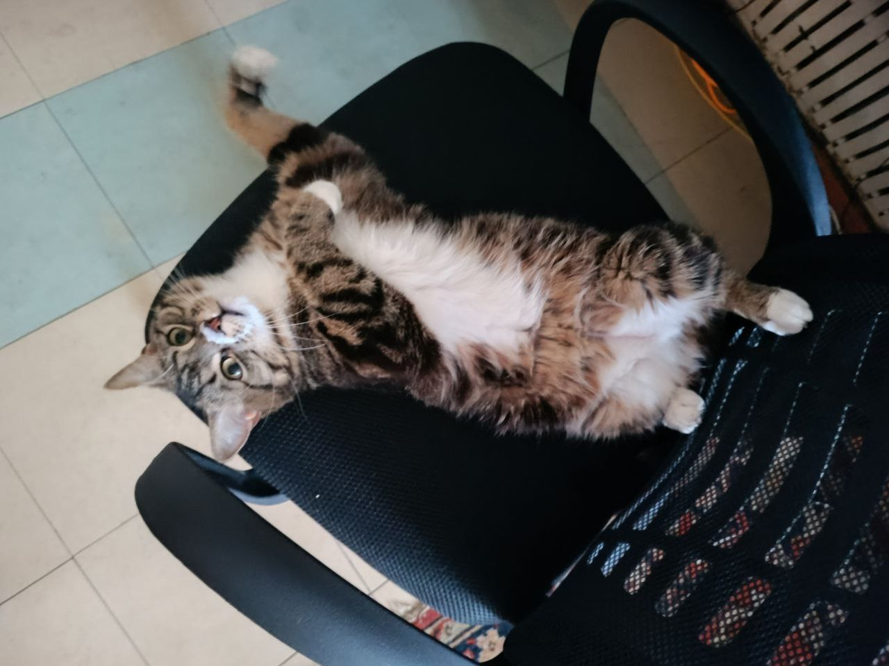
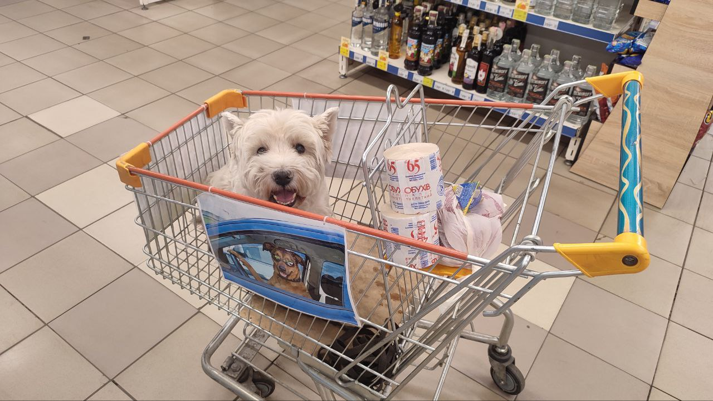

Привіт! Я рада вітати вас на своїй сторінці.
Тут невеликий блок тексту про мене і про моє життя.
Вище ви можете побачити невелике меню, в якому можете обрати блок
тексту, який хочете прочитати.
Про мене
Коротко, тільки факти:
- Мене звуть Валерія, приємно познайомитися
-
Мені 22 роки
- Я навчаюся програмуванню майже рік
-
Маю кота, собаку та хлопця
- Це наче все!
Два рази я отримувала різні професії, але кидала їх через певні
обставини.
Загалом раніше мої основні напрямки роботи були робота з людьми та
продажі. Але це точно не те, чим я би хотіла займатися в своєму житті
:)
Я енергійна, ризикова та цілеспрямована людина. Навіть, якщо все йде погано, згодом я точно знайду вихід.
Мені подобається заводити знайомства з іншими людьми, які мають подібні принципи та характер. Особливо, якщо ми разом йдемо до однієї цілі!
Своє фото я не хочу вставляти, тому тримайте мого кота Люцифера та собаку Фреша:
 Про програмування
Свій шлях я почала з того, що вирішила змінити свій напрямок
діяльності. Це було складно, але я шукала, як могла. Наткнулася на
e-mail-маркетинг та вирішила вивчити його.
Згодом я дізналася,
що листи зараз верстають, тому пішла на безкоштовний курс верстки. Я
ще раніше знала, що це таке. В школі ми вивчали HTML і писали його в
блокнотах.
Мені реально тоді це подобалось, тому після курсу, знов підігрівши
свою цікавість, я пішла розвиватися в цьому напрямку.
Верстку я вивчила +- самостійно, а потім перейшла на JS. Самій вчити
JS було складно, і я вирішила піти на курс Жені по ньому.
Там я
просто по вуха закохалася в цю мову програмування і планую далі
розвиватися в ній, як в основному напрямку діяльності.